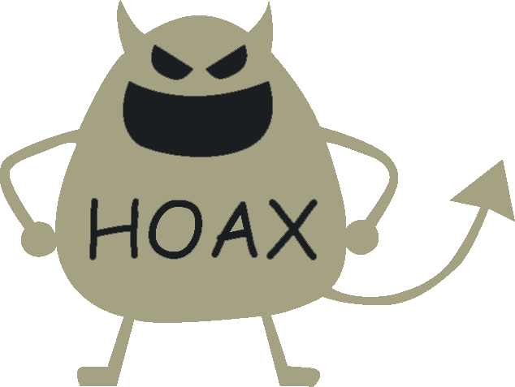

Hoax adalah informasi yang direkayasa untuk menutupi informasi sebenarnya. Hoax juga bisa diartikan sebagai upaya pemutarbalikan fakta menggunakan informasi yang seolah-olah meyakinkan tetapi tidak dapat diverifikasi kebenarannya.
Hoax merupakan tindakan mengaburkan informasi yang sebenarnya, dengan cara membanjiri suatu media dengan pesan yang salah agar bisa menutupi pesan yang benar. Saat ini di Indonesia sangat banyak media sosial yang dapat dijadikan sumber bagi masyarakat untuk mendapat berita-berita terbaru seperti youtube,facebook,instagram,twitter dan masih banyak lagi.
Pada kesempatan ini, yang menjadi pusat perhatian penulis bukanlah tentang media sosial melainkan begitu banyaknya berita hoax yang tersebar di media sosial. Karena saat ini berita hoax di media sosial sudah sangat memprihatinkan.

Sementara itu terkait dengan dampak hoax, selain memiliki dampak hukum yaitu pelanggaran undang- undang, hoax juga berdampak pada kehidupan sosial budaya masyarakat. Beberapa dampak hoax yaitu: memecah bangsa, menimbulkan permusuhan antar agama, menimbulkan kecurigaan antar elemen bangsa, menghambat pembangunan, saling mencurigai antar etnis tertentu, adanya intimidasi dari pihak tertentu dan lain sebagainya.
Banyaknya efek yang terjadi akibat dari berita hoax tersebut kemudian menimbulkan keresahan di masyarakat. Banyak faktor pendukung tersebarnya berita hoax pun menyebabkan semakin parahnya berita hoax yang diterima masyarakat. Akibatnya berita hoax membuat masyarakat menjadi curiga dan bahkan membenci kelompok tertentu, menyusahkan atau bahkan menyakiti secara fisik orang yang tidak bersalah, memberikan informasi yang salah kepada pembuat kebijaksanaan. Kepercayaan terhadap berita hoax kemudian menjadikan masyarakat tidak cerdik dalam menerima berita tanpa memeriksa kebenarannya terlebih dahulu.
Ada tiga tujuan disebarkannya hoax yaitu: Pertama, motif ekonomis; kedua, motif ideologis- politis; dan ketiga, motif asal berbagi atau kesenangan belaka.
1. Motif Ekonomis
Motif ekonomis merujuk pada akumulasi modal dan kalkulasi laba dari si pembuat hoax melalui naiknya rating kunjungan website, darinya ia mendapat rating tinggi dan iklan pun masuk.
2. Motif Ideologis-Politis
Motif ideologis-politis, motif ini cenderung membuat dan atau menyebar hoax untuk tujuan-tujuan ideologis dan politis yang muaranya adalah menghantam lawan- lawan berbeda ideologi dan menghamtam lawan-lawan politik melalui ruang virtual.
3. Motif Asal Berbagi
Motif ketiga, yaitu motif asal berbagi atau kesenangan belaka bahkan kadang tanpa tahu resikonya. Terlepas dari persoalan mengetahui atau tidak apakah konten tersebut hoax atau bukan. Ada rasa bangga bila bisa memberi atau berbagi informasi yang baru apalagi jika informasi tersebut merupakan info yang ‘hangat’ dan viral.
Ada tiga faktor yang menyebabkan masyarakat Indonesia sangat mudah dipengaruhi oleh berbagai konten hoax yaitu: Pertama, minat baca masyarakat masih sangat kurang. Kedua, tidak memeriksa kebenaran dan keaslian berita tersebut. Ketiga, masyarakat Indonesia terlalu cepat dalam menyimpulkan suatu peristiwa yang terjadi. Hal tersebut dikarenakan kurangnya pengetahuan atas sebab dan akibat, ketika hal tersebut terjadi dan kurangnya upaya dalam mencari tahu hal yang lebih jelas.
Cara mengantisipasinya bisa dilakukan dari dua sisi yaitu sisi masyarakat pengguna dan penikmat media dan sisi regulasi. Dari sisi pengguna, perlu adanya proses gerakan literasi media. Sementara dari sisi regulasi perlu punishment yang kuat tidak hanya berfokus pada sipenyebar hoax tapi lebih menitik beratkan pada sipembuat isi hoax. Selain itu mengatasi hoax antara lain dengan melakukan langkah verifikasi tentang kebenaran berita dan informasi tersebut dengan cara mengecek sumber berita, membandingkan dengan realita, dan melihat komentar-komentar yang ada pada berita tersebut.